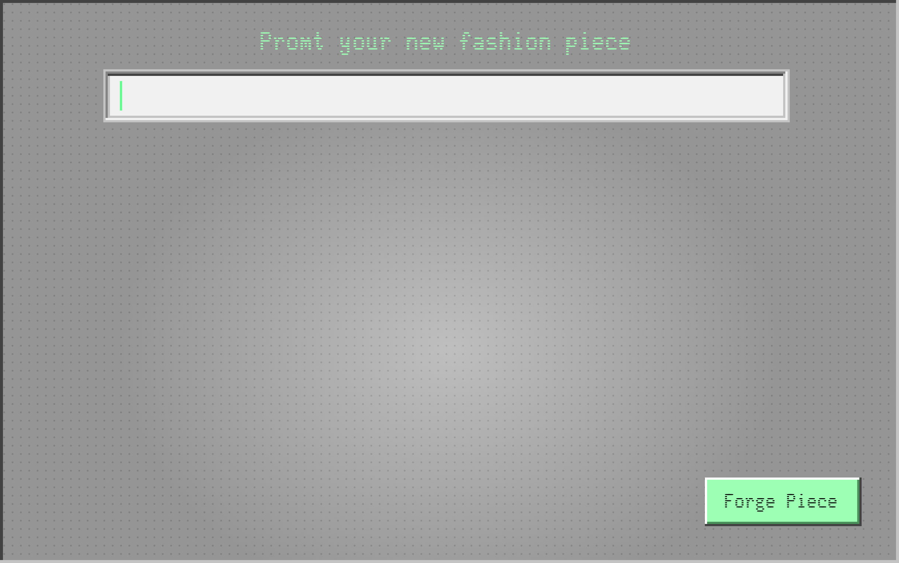

At the heart of transformation stands
the Fashion Forge
→ a machine humming with purpose
and renewal
It takes our worn, our tired fabrics
and, with a touch of alchemy,
turns them into something both familiar and utterly new.
The process begins with a scan of
every worn corner and faded hue, understanding the life each garment has lived.
They carry the weight of moments lived—JOYS, sorrows, and everything in between.
You stand before it, hands filled with memories in cloth form, and
you make a wish
You speak your vision——a jacket that carries the strength of old jeans
A
dress
that
dances
with
the
spirit
of
a
thousand
summer
nights.
The Fashion Forge listens, processes, then begins its work.
It unravels the past
to weave the future
Fabrics are deconstructed, fibers separated and reconstituted.
Ensuring that the history woven into each
thread is respected and understood.
But more than that, it knows you
Crafting clothing that feels like a second skin
Ensuring each creation is not only new but made to fit you
perfectly.
It takes your measurements, intimate
and precise.
It learns the language of your body,
every curve and line, the
nuances of your shape.
This is not merely the work of a
machine, but the
artistry of a true couturier.
You’re not just wearing clothes;
you’re wearing stories,
histories woven into every thread.
nothing is truly lost
It’s a reminder that, that everything can be reborn in a new form.
In its quiet, methodical way, it recycles the essence of what was into
what will be.
The result is not just clothing but a story rewritten—A poem stitched
in fabric.
Each piece is sustainable, yes, but also a testament to
individuality.
Every seam, every fold, is a line in the narrative of who you are and
where you’ve been.
What emerges is a statement: of style, of sustainability, of
connection to the earth and to oneself.
Fitting your form like a whispered
secret.
The new garment is ready, Forged with care.
When you wear it, you carry with you
not just fashion.
But the echoes of transformation, resilience, and the enduring beauty
of renewal.
Forge
your
next
high
fashion
piece
now ↙
You feel the weight of the past lifting,
replaced by
It honours the old, breathes life into the forgotten, and crafts
something
made just for you
that is both a continuation and a new beginning
It is a gift of transformation, a celebration of who you are and who
you can be.
It is a story
of change, of hope,
of a world where we value what we have and find beauty in what can be.
of change, of hope,
of a world where we value what we have and find beauty in what can be.
It is a story of you, told through
fabric and thread, woven into the
very fabric of your life.
